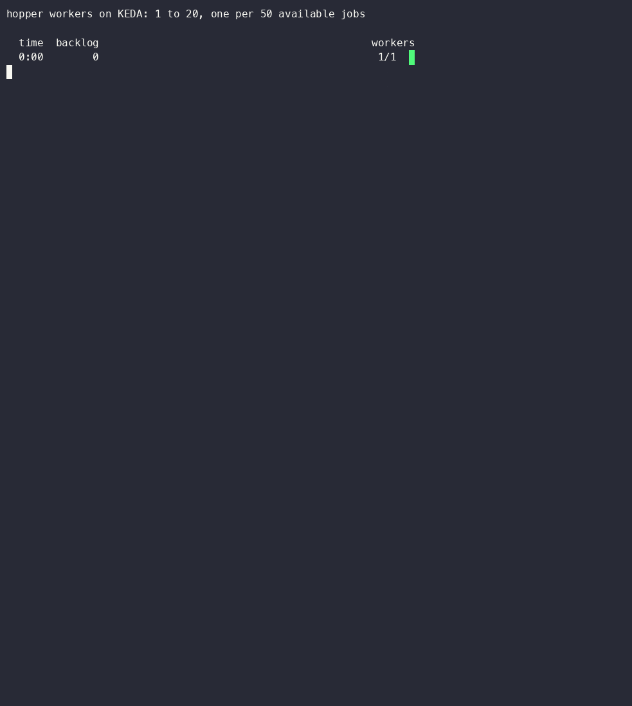

hopper Distributed job queuePersonal project, 2026GoSQL

Workers scaling from 1 to 20 and back as the queue fills and drains, recorded during a passing test run.
A job queue I wrote in Go. Producers enqueue over gRPC, workers pull jobs through a Go SDK, and PostgreSQL stores every job and lease. It retries failed jobs, sets aside dead ones, runs cron schedules, and scales its workers on Kubernetes with KEDA.
How I know it works
- A chaos suite kills workers and restarts the broker and PostgreSQL in the middle of a run. Across 1M+ jobs, none were lost.
- One test restarts three workers under 1,200 jobs and fails if any job starts twice. Another pushes 20,000 jobs through a scale-up to 20 workers and back down, and fails on any redelivery.
- On one broker, throughput went from 2,131 to 6,191 jobs a second after I rewrote the lease query to use each queue's index, sized the connection pool, and woke idle workers on enqueue. An idle queue now picks up a new job in 1.5 ms instead of 85 ms.
Decisions
- PostgreSQL owns every lease, so brokers keep no state and can be killed at any time.
- Workers renew a lease at a third of its length. The SDK only retries
UNAVAILABLEandDEADLINE_EXCEEDED, because anINTERNALerror can mean the write already committed. - Only one broker runs the cron scheduler, chosen with a PostgreSQL advisory lock. Each tick carries an idempotency key, so a stalled former leader can't fire it twice.
- If queue depth can't be read, KEDA holds the current worker count instead of scaling down.
Built with Go, gRPC, PostgreSQL, Kubernetes, Helm, KEDA, Prometheus, Grafana
GRAIN LLM gateway Shared AI gateway for club projectsRiceApps, 2026GoSQL
GRAIN is an OpenAI-compatible LLM gateway I architected as technical lead at RiceApps. It sits between our client projects and the model providers, so the club manages access and tracks cost in one place.
- It serves 15+ projects and cut club-wide AI spending by 30%.
- It routes each request to a provider that supports what the request needs. Each model has its own circuit breaker, and traffic fails over automatically when a provider goes down.
Built with Go, PostgreSQL, Redis
SAS data pipeline Production healthcare ETLSAS, summer 2026GoSQL
Hours to ingest one large batch
About 6x faster. It now ingests 10+ TB a month in production.
On the Health & Life Sciences R&D team at SAS, I re-architected the Go pipeline that loads healthcare data from Azure Blob Storage and a FHIR API into Snowflake. I split it into separate download, transform, and load stages that run concurrently.
- Large batches went from about 25 hours to about 4.
- It ingests 10+ TB a month in production and saves 300+ hours of runtime a month.
- I also cut latency by 90% in the Go package that transforms FHIR data, which is used across the Health & Life Sciences division, by parallelizing parsing and adding caching.
Built with Go, Azure Blob Storage, FHIR, Snowflake
SkyTrack Flight delay predictionPersonal project, 2026Java
Average error predicting a departure's delay, in seconds (lower is better)
Backtested on 1,951 real flights from March 9, 2026.
SkyTrack replays recorded aircraft positions, detects landings with a state machine for each aircraft, and works out how late each arrival was. When a plane lands, it finds that aircraft's next flight, predicts how late it will leave, and follows the delay through the rest of the plane's day.
- I tested it against real Bureau of Transportation Statistics on-time data, fitting on March 1–8, 2026 and scoring on March 9. Across 1,951 flights the average error was 483 seconds, against 792 for always predicting zero.
- When it predicts a delayed departure, it's right 88.7% of the time. For predicted chains of delays, it's right 97.2% of the time.
- Most of the improvement in chain prediction (F1 from 0.139 to 0.620) came from fixing two bugs in how I measured it, not from tuning the model.
Decisions
- Positions go through SQS FIFO grouped by aircraft, so each plane's updates arrive in order while different planes process in parallel.
- Live state is in DynamoDB with a single-table design. History goes to S3 as Parquet, partitioned by hour.
- A prediction is the usual delay for that airline, airport, and hour, plus how much the turnaround is squeezed. The turnaround term accounts for most of the accuracy.
Built with Java, Spring Boot, SQS, DynamoDB, S3, LocalStack. 416 tests.
Viya MCP server AI agents for SAS ViyaSAS, 2026Python
An open-source MCP server in Python that lets AI agents work in SAS Health through SAS Viya's APIs, signed in with OAuth. Agents can ingest data, build ML pipelines, map schemas, and manage connections.
- It's used by 40+ employees and 15+ clients.
- ML jobs that take 2+ hours run asynchronously, so an agent starts one and checks back instead of waiting on it.
Built with Python, OAuth, SAS Viya APIs
Fondren inventory Library inventory systemRiceApps, 2025–26TypeScriptSQL
My first RiceApps project: an inventory system for Rice's Fondren Library, with a PostgreSQL schema and a React admin dashboard.
- It tracks 200+ assets.
- It replaces 2,600 paper forms a year, which saves library staff 87 hours a year.
Built with Next.js, TypeScript, PostgreSQL